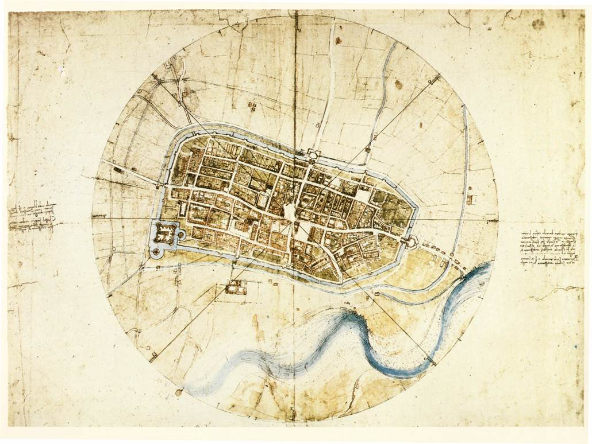
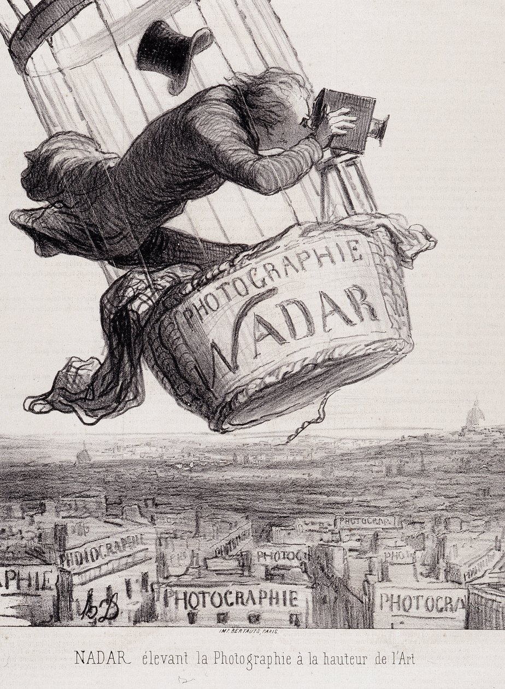
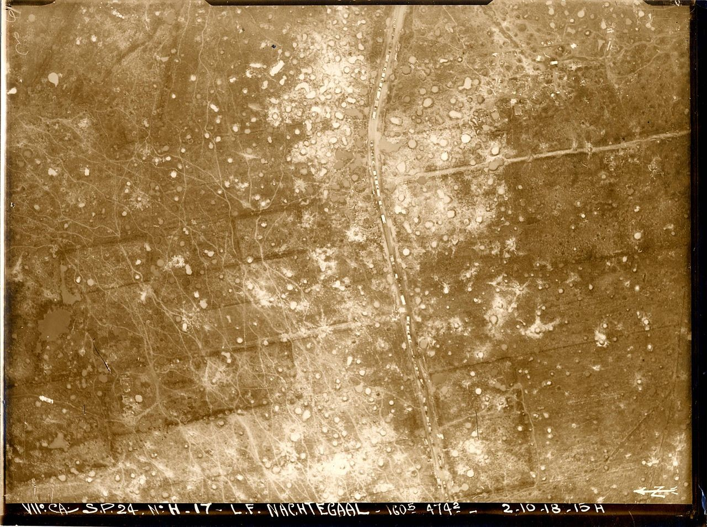
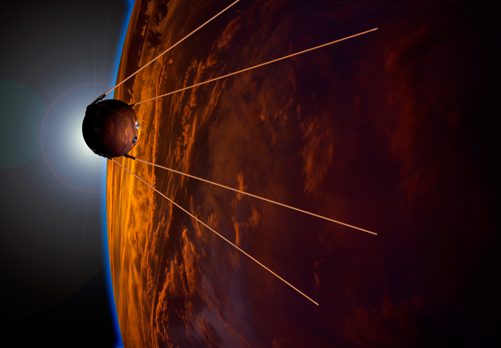
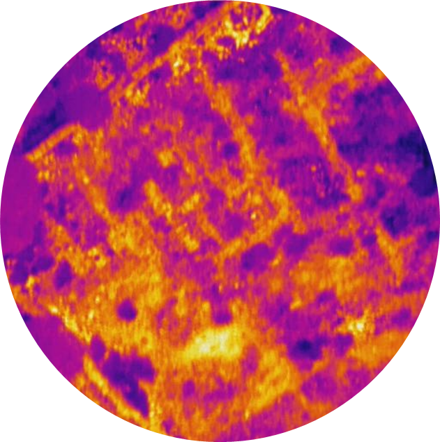

Orígenes y primeros pasos
- Observación directa (antes del siglo XIX):
Aunque la teledetección como la conocemos no existía, el interés por observar la Tierra desde perspectivas elevadas comenzó temprano.
Ejemplo histórico: En el Renacimiento, Leonardo da Vinci y otros artistas imaginaron mapas y paisajes desde una vista aérea.
- Primeros experimentos con fotografía aérea (siglo XIX):
1840s: Nacimiento de la fotografía.
1858: Gaspard-Félix Tournachon (conocido como Nadar) tomó la primera fotografía aérea desde un globo aerostático en Francia.
La fotografía aérea marcó el inicio de la observación sistemática de la superficie terrestre.
Desarrollo inicial de la teledetección (principios del siglo XX)
- Fotografía desde globos y aviones:
Primera Guerra Mundial (1914-1918): La fotografía aérea se utilizó ampliamente para fines militares, como la planificación de ataques y la identificación de posiciones enemigas.
- Expansión en tiempos de paz:
Década de 1920: Uso de fotografías aéreas para crear mapas, estudiar el uso del suelo y planificar ciudades. Los primeros mapas de zonas agrícolas y bosques se generaron en esta época.
Segunda Guerra Mundial y avances tecnológicos (1939-1945)
- Uso militar intensivo:
Los avances en cámaras aéreas y el desarrollo de tecnologías de radar permitieron detectar objetos y movimientos incluso en condiciones de nubosidad o de noche.
- Nacimiento del radar:
El radar (Radio Detection and Ranging) se desarrolló como una herramienta clave, marcando un hito en la detección remota sin necesidad de luz visible.
La era espacial y los satélites (1950s-1970s)
- El inicio de la observación desde el espacio:
1957: Lanzamiento del Sputnik 1 por la Unión Soviética, el primer satélite artificial. Aunque no tenía fines de teledetección, marcó el inicio de la exploración espacial.
- Primeros satélites de observación:
- 1960: Lanzamiento del satélite TIROS-1 por Estados Unidos, diseñado para observar el clima terrestre desde el espacio.
- 1972: Lanzamiento de Landsat 1, el primer satélite dedicado a la observación de la Tierra a gran escala. Landsat permitió recopilar datos sistemáticos sobre el uso del suelo, los ecosistemas y los cambios en el paisaje.
- Incorporación de sensores multiespectrales:
Los satélites empezaron a usar sensores que podían captar información más allá del espectro visible, como el infrarrojo.
Teledetección moderna y aplicaciones avanzadas (2000s-presente)
- Satélites de alta resolución:
Satélites como WorldView y GeoEye ofrecen imágenes de altísima resolución, útiles para estudios urbanos, agricultura de precisión y monitoreo ambiental.
- Integración con drones y tecnología móvil:
Los drones y UAVs (Vehículos Aéreos No Tripulados) permiten obtener datos a escala local con sensores de alta precisión.

https://www.20minutos.es/noticia/5143264/0/asi-imagino-leonardo-da-vinci-las-imagenes-satelite/

Fuente: Meisterdrucke


Desde 681 km es capaz de adquirir imágenes con resolución de 15 cm
